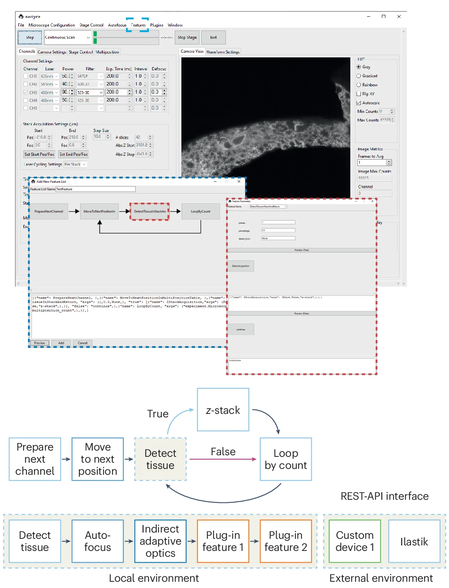
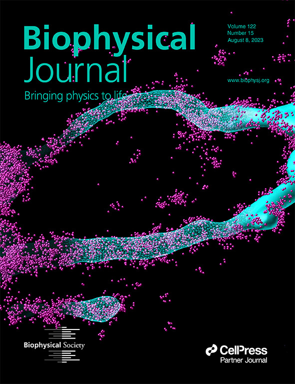
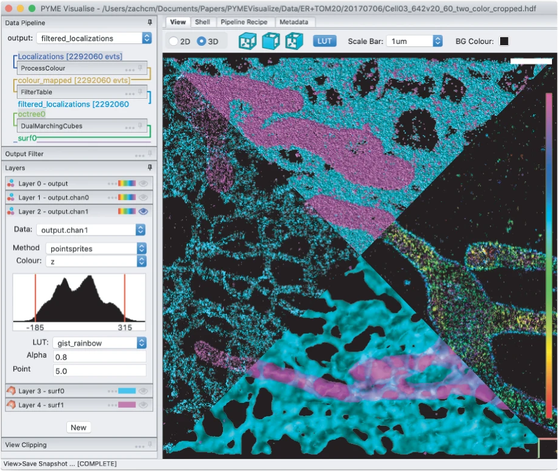

Smart light-sheet microscopy
In both live cells and fixed tissues, many important cellular interactions and microenvironmental niches are exceedingly rare. Automatic identification of such events is computationally expensive, especially if such analyses are performed for many biological replicates or through time. To address such challenges, researchers must apply smart microscopy techniques. Historically, smart microscopes have been optimized for specific biological contexts with distinct hardware and control requirements, which may not be supported by existing smart routines. Navigate was developed as a user-friendly platform to enable biologists and technology developers alike to establish and reuse smart microscopy pipelines on diverse sets of hardware from within a single framework.
Navigate: an open-source platform for smart light-sheet microscopy. Zach Marin*, Xiaoding Wang*, Dax W. Collison, Conor McFadden, Jinlong Lin, Hazel M. Borges, Bingying Chen, Dushyant Mehra, Qionghua Shen, Seweryn Gałecki, Stephan Daetwyler, Steven J. Sheppard, Phu Thien, Baylee A. Porter, Suzanne D. Conzen, Douglas P. Shepherd, Reto Fiolka and Kevin M. Dean. Nature Methods (2024). *Equal contribution
Reconstruction of subcellular membranes with nanoscale precision
Membrane surface reconstruction at the nanometer scale is required for understanding mechanisms of subcellular shape change. This historically has been the domain of electron microscopy, but extraction of surfaces from specific labels is a difficult task in this imaging modality. Most methods for extracting surfaces from fluorescence microscopy have poor resolution or require high-quality super-resolution data that is manually cleaned and curated. NanoWrap is designed to extract surfaces with nanometer precision from generalized—even noisy—single-molecule localization microscopy data. This enables researchers to study the shape of specifically labeled membranous structures inside cells.
Extracting nanoscale membrane morphology from single-molecule localizations. Zach Marin*, Lukas A. Fuentes*, Joerg Bewersdorf and David Baddeley. Biophysical Journal (2023). *Equal contribution
Exploration of 3D single-molecule localization data
Single-molecule localization microscopy (SMLM) techniques such as PALM, STORM, and PAINT generate lists of single fluorophore positions that capture nanoscale structural details of subcellular organization. To develop biological insight, researchers must be able to postprocess and visualize these data in a meaningful way. PYMEVisualize is an open-source tool for the interactive exploration and analysis of three-dimensional (3D), multicolor, SMLM data. It brings together a broad range of the most common post-processing tools for SMLM and allows for visualization of this data interactively and in 3D.
PYMEVisualize: an open-source tool for exploring 3D super-resolution data. Zach Marin, Michael Graff, Andrew E. S. Barentine, Christian Soeller, Kenny Kwok Hin Chung, Lukas A. Fuentes and David Baddeley. Nature Methods (2021).
If you would like to see more of my work, check out my curriculum vitae or other projects.